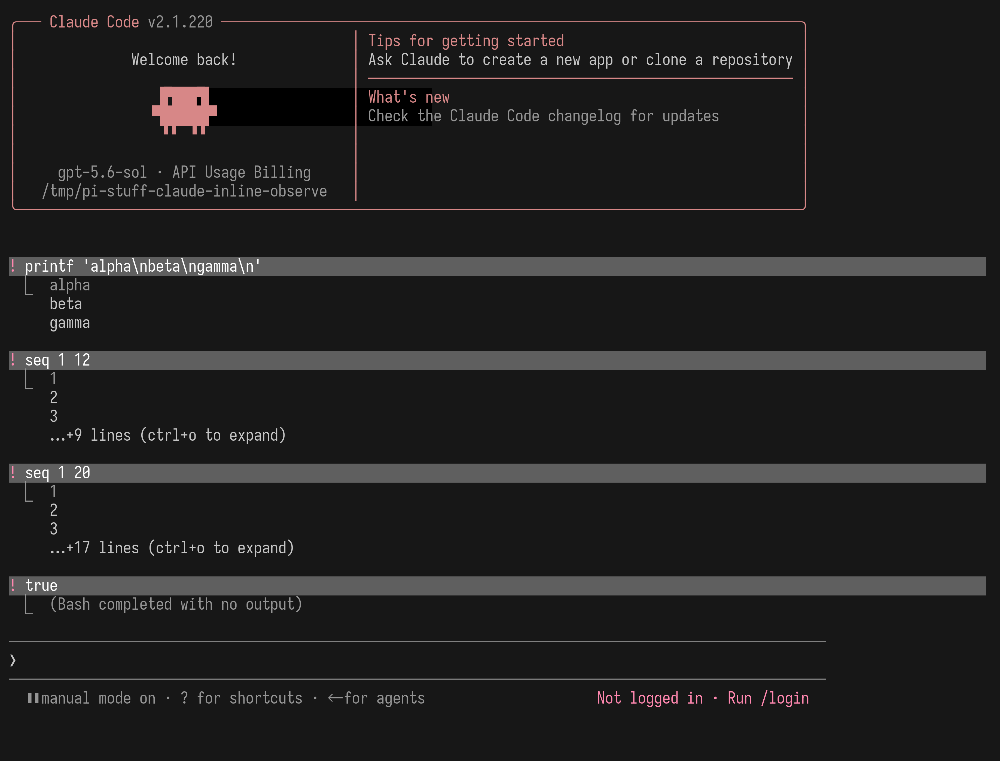
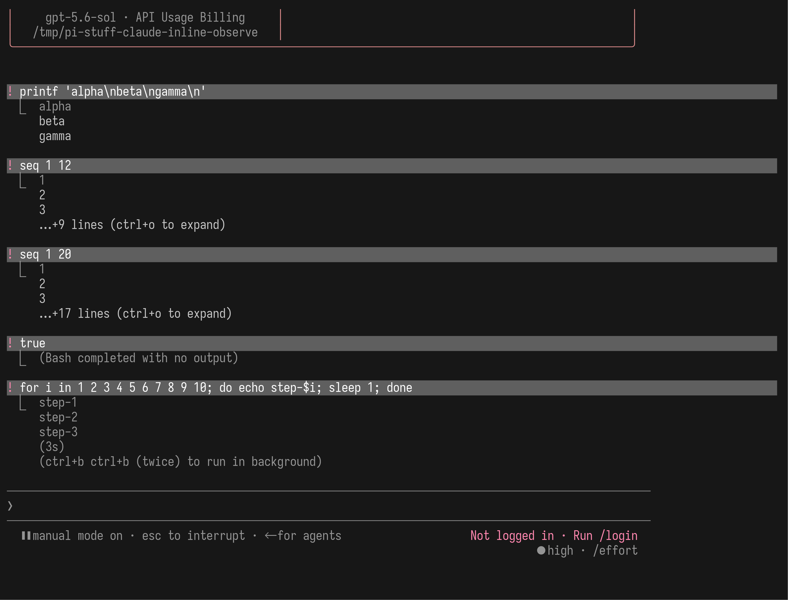
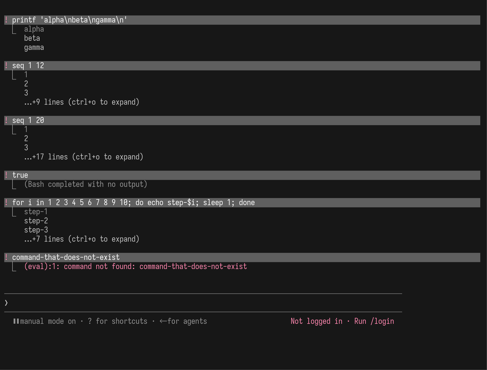
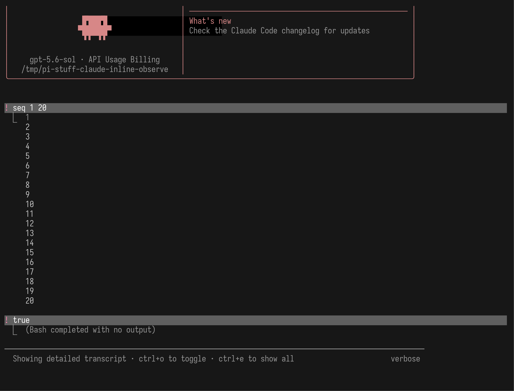
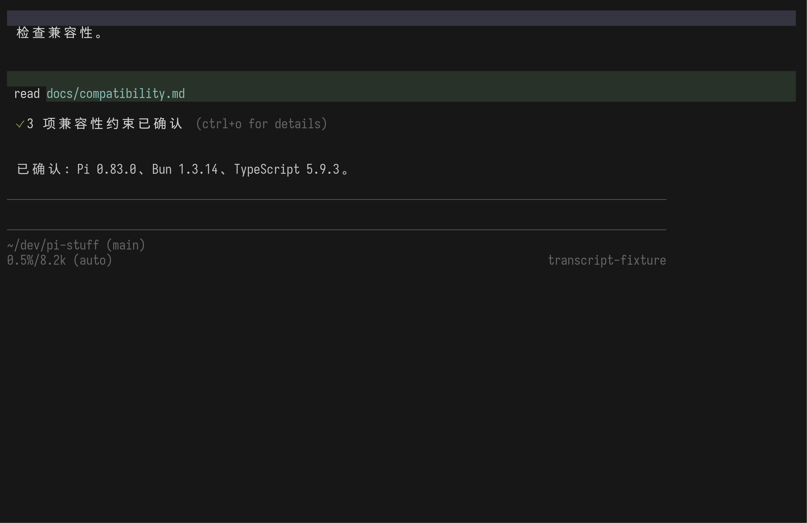
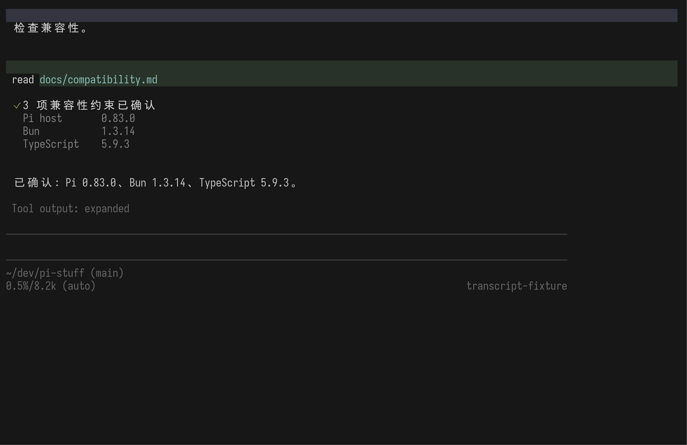
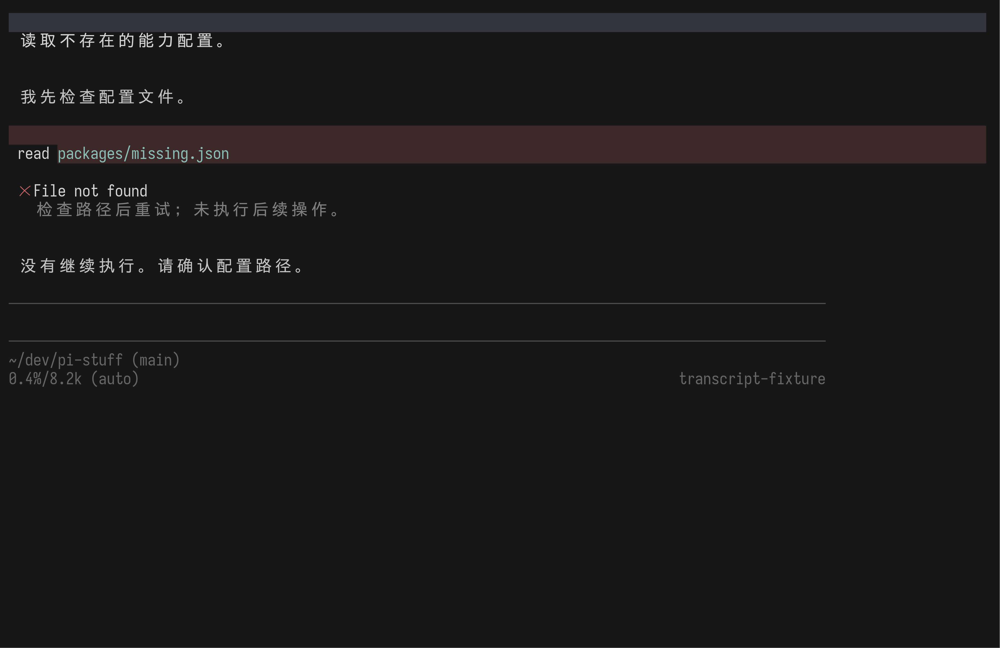

Claude Code 默认给摘要，不把终端日志倒进对话。
下面四张图来自 Claude Code 2.1.220 发布版。它们只运行本地无害 shell 命令，不需要登录，也没有调用模型。
{kind=link}

长结果只显示前三行和剩余行数。对话还能继续读，不会被一次工具输出淹没。
{kind=link}

最近输出、耗时和当前可做的动作都附着在这次操作上；不会每秒新增一条进度消息。
{kind=link}

不另开错误中心，不弹出大面板。用户能直接看出哪一步失败以及返回了什么。
{kind=link}

Ctrl+O 切换详细 transcript。长日志仍属于原来的对话记录，不会突然变成另一套 GUI。
可观察行为与官方说明相符：Ctrl+O detailed transcript；运行计时、折叠工具摘要与失败结果展开见 Claude Code 官方 changelog。截图终端为 100 × 38 cells。
Pi 不需要换 Host，也能表达同一套层级。
下面是仓库锁定的 Pi 0.83.0。固定 Session fixture 让真实 Pi 重建对话，再由一次性 Extension 只负责工具文案和折叠内容；无网络、无模型、无伪造终端。
{kind=link}

工具名、对象和结论留下；三行版本详情先收起。
{kind=link}

Ctrl+O 后，Pi / Bun / TypeScript 详情回到原工具记录下面。
{kind=link}

失败原因留在原处；一句提示说明接下来需要什么。
这是结构原型，不是最终皮肤。颜色、图标、具体状态词和每种工具的摘要仍会单独打磨。可复现文件：renderer Extension、Session fixture、capture script。截图终端为 100 × 32 cells。
建议确认的，是共同规则，不是七种新组件。
Read、Bash、diff、测试、错误和前台 Agent 可以有不同内容，但都服从同一套对话行为。
这次明确不决定
不决定最终图标、绿色或灰色的具体范围、每种工具显示几行、展开快捷键是否永远是 Ctrl+O，也不决定 Agent 摘要的文案模板。那些要等功能边界明确后，用同一套真实 TUI 方法逐项看。
如果确认，这会成为 Pi Stuff 所有 fork 的共同约束。下一步再看第三类 UI：输入框附近那一行“现在正在做什么”。